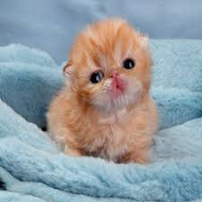
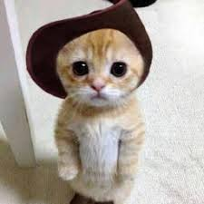
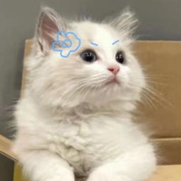

Adopta un gatito
Cuando decides dejar a un felino en un lugar sin
el cuidado de alguien responsable o en la calle,
no le estás dando una mejor calidad de vida, sino
convertirlo en un animal más sin hogar y no a salvo
de los distintos tipos de peligro que exsiten en el
exterior.
Encuentra a un nuevo integrante

Adoptame

Adoptame

Adoptame